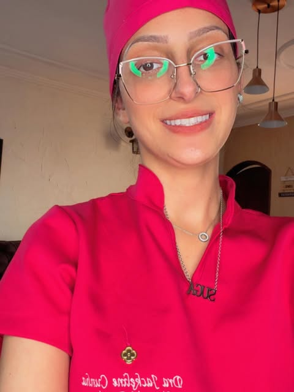
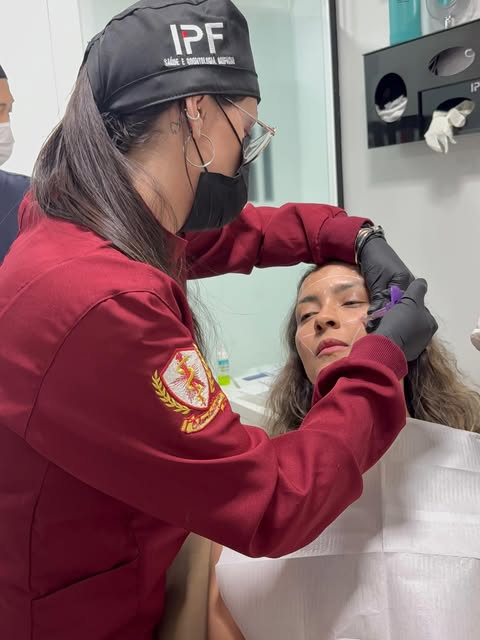
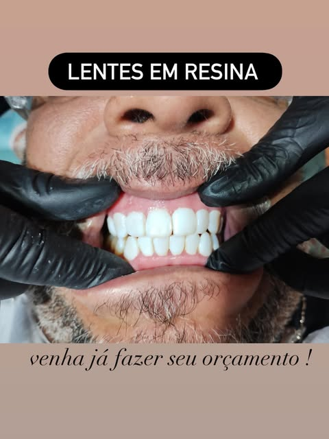
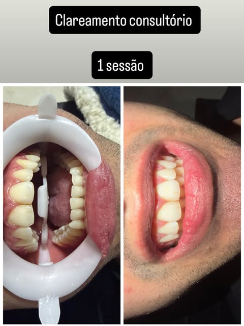
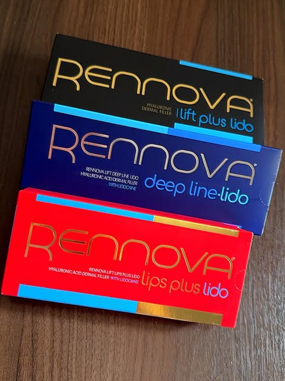
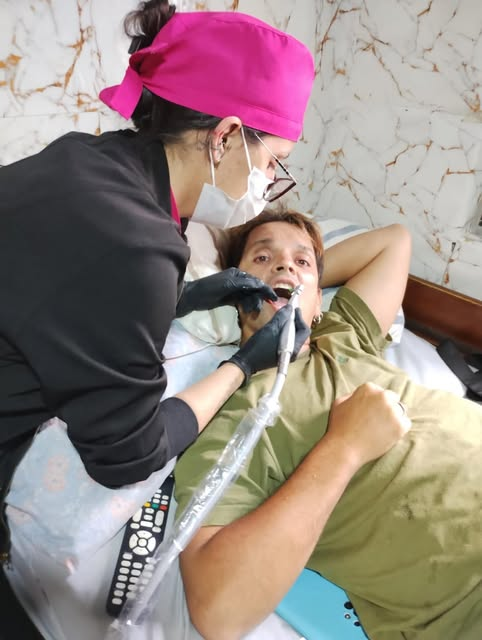
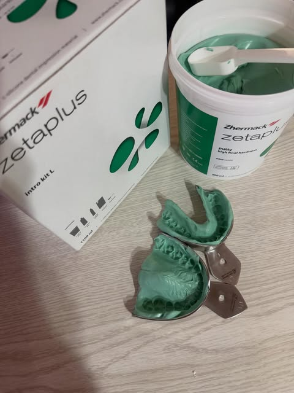
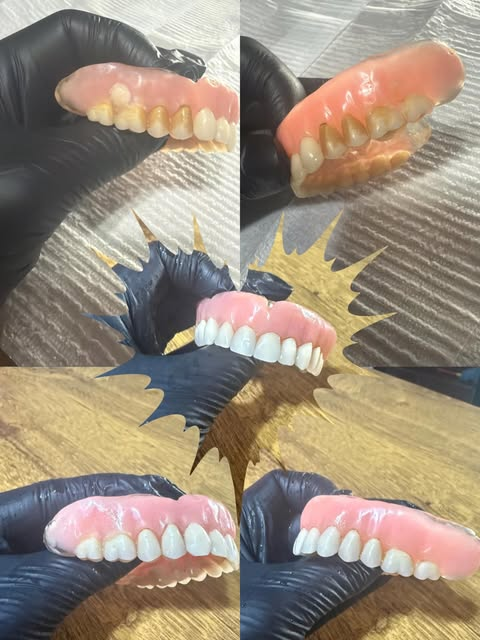

Odontogeriatria
Odontologia especializada para idosos: cuidado gentil, paciente e seguro para a saúde bucal da melhor idade — no consultório em Jardim Penha ou a domicílio.
Odontologia de excelência
Cuidado humano, tecnologia e delicadeza em cada detalhe. Cirurgiã-dentista dedicada a transformar sorrisos e devolver a sua confiança.


Sobre a doutora
Apaixonada por sorrisos, a Dra. Jackeline une técnica, sensibilidade e um olhar atento para cada paciente. Seu compromisso é oferecer um atendimento acolhedor, transparente e livre de dor, num ambiente pensado para o seu conforto.
Do preventivo à estética avançada, cada tratamento é personalizado para revelar o melhor do seu sorriso — com naturalidade e resultados que duram. A doutora é referência em odontogeriatria em Jardim Penha, com um olhar carinhoso e especializado para a saúde bucal dos idosos.
O que oferecemos
Soluções completas para a saúde e a beleza do seu sorriso.
Odontologia especializada para idosos: cuidado gentil, paciente e seguro para a saúde bucal da melhor idade — no consultório em Jardim Penha ou a domicílio.
Facetas, lentes de contato e harmonização do sorriso com naturalidade.
Dentes mais brancos de forma segura, com resultados visíveis e duradouros.
Alinhadores transparentes para endireitar o sorriso com discrição e conforto.
Limpeza, profilaxia e acompanhamento para manter tudo em dia.
Próteses dentárias que devolvem função, conforto e a beleza do seu sorriso.
Procedimentos que valorizam a sua beleza de forma equilibrada.
Levo o cuidado odontológico até você, no conforto e na segurança da sua casa.
Momentos & resultados
Um pouquinho do dia a dia e dos sorrisos transformados.






Quem confia
"Atendimento maravilhoso e sem dor! Saí de lá com o sorriso que sempre sonhei."
"Profissional atenciosa e cuidadosa. Explica cada etapa com muita paciência."
"Consultório impecável e resultado natural. Recomendo de olhos fechados!"
Vamos conversar
Tire suas dúvidas e dê o primeiro passo rumo ao sorriso que você merece.